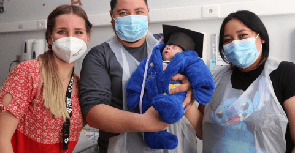

BIENESTAR PARA PADRES
Bienestar emocional

Madres fuertes, hijos felices
Prioriza tu bienestar
“Dedica tiempo a tu recuperación postparto y cultiva un equilibrio saludable para el bienestar de ambos."
Qué cuidados realizar durante el Postparto:
- Descansa: Deben darte tiempo y espacio. Recuerde que su bebé está siendo atendido las 24 horas por el equipo de salud.
- Nutrición equilibrada: Es crucial para la recuperación y la producción de leche.
- Cuida las heridas: Si tuviste una cesárea o un parto vaginal, sigue las indicaciones del médico para cuidar cualquier incisión o herida.
- Ejercicio gradual: Inicia con actividades suaves y paseos cortos. Es normal que quieras visitar a tu bebé casi de inmediato, pero al principio podrías sentirte débil y necesitar ayuda.
- Cuidado de mamas,amamantar o utilizar sacaleche cuando corresponda, facilitar salida de la leche con paños tibios , masajes suaves.
- Acepta ayuda: Permitir que otros te apoyen te dará tiempo para descansar y recuperarte.
- Establece rutinas diarias: Establecer rutinas, como visitar al bebé en horarios regulares, puede proporcionar estructura y estabilidad emocional.
Nutrición durante la lactancia
La nutrición durante la lactancia puede generar confusión. ¿Cuánto debes comer? ¿Qué debes evitar? ¿Cómo puede afectar tu dieta al bebé? Sigue estos importantes consejos sobre nutrición.
El consumo de una variedad de alimentos diferentes durante la lactancia cambiará el sabor de la leche materna.
Esto expondrá a tu bebé a distintos sabores, que pueden ayudarlo a aceptar alimentos sólidos con mayor facilidad más adelante.
Todo esto puede parecer un reto injusto cuando vos y tu pareja ya están lidiando con las exigencias de un bebé prematuro. Pero tomar la decisión de dar el pecho y seguir la rutina de extracción y alimentación se verá recompensado.
Empezarás a ver cómo tu bebé gana peso y crece fuerte y sano ante tus ojos. Además, de la lactancia materna, otra forma de establecer un vínculo con tu bebé prematuro y favorecer su desarrollo es practicar el contacto piel con piel.
Comprende la información básica sobre la nutrición con leche materna.
¿Tengo que consumir más calorías mientras estoy amamantando?
Sí, es posible que tengas que comer un poco más (unas 330 a 400 calorías adicionales al día) para recibir la energía y los nutrientes para producir leche.
Para obtener estas calorías adicionales, elige alimentos ricos en nutrientes, como una rebanada de pan integral con una cucharada (unos 16 gramos) de mantequilla de cacahuate (maní), un plátano o una manzana medianos y 8 onzas (unos 227 gramos) de yogurt.
¿Qué alimentos debería comer cuando estoy amamantando?
Concéntrate en tomar decisiones saludables que favorezcan la producción de leche. Opta por alimentos ricos en proteínas, como carnes magras, huevos, lácteos, frijoles, lentejas y mariscos con bajo contenido de mercurio. Elige una variedad de cereales integrales, como también frutas y verduras.
Para garantizar que tú y tu bebé reciban todas las vitaminas que necesitan, tu médico puede recomendarte que continúes tomando un suplemento diario de multivitaminas y minerales hasta que dejes de amamantar.
¿Cuánto líquido necesito mientras estoy amamantando?
Bebe cuando tengas sed, y bebe más si tu orina es de color amarillo oscuro. Podrías beber un vaso de agua u otra bebida cada vez que amamantes.
Ten cuidado con los jugos y las bebidas azucaradas. El exceso de azúcar puede contribuir al aumento de peso o sabotear tus esfuerzos para perder el peso del embarazo. El exceso de cafeína también puede ser problemático. Limítate a no más de dos o tres tazas (16 a 24 onzas [473 a 710 mililitros]) de bebidas con cafeína al día. La cafeína en la leche materna puede agitar al bebé o interferir en su sueño.
¿Qué ocurre con la dieta vegetariana y la lactancia?
Si sigues una dieta vegetariana, es muy importante que elijas alimentos que te proporcionen los nutrientes que necesitas. Por ejemplo:
- Elige alimentos ricos en hierro, proteínas y calcio. Las buenas fuentes de hierro incluyen las lentejas, los cereales enriquecidos, las verduras de hojas verdes, las arvejas (guisantes, chícharos) y las frutas secas, como las uvas pasas. Para ayudar a que tu cuerpo absorba el hierro, come alimentos ricos en hierro junto con alimentos con alto contenido de vitamina C, como las frutas cítricas.
En cuanto a las proteínas, ten en cuenta las fuentes vegetales, como los productos de soja y los sustitutos de la carne, las legumbres, las lentejas, los frutos secos, las semillas y los cereales integrales. Los huevos y los productos lácteos son otras opciones.
Las buenas fuentes de calcio incluyen productos lácteos y verduras de hojas color verde oscuro. Otras opciones incluyen productos enriquecidos y fortificados con calcio, como jugos, cereales, leche de soja, yogurt de soja y tofu.
- Considera incorporar suplementos. Es probable que tu proveedor de atención médica te recomiende un suplemento diario de vitamina B12. La vitamina B12 se encuentra casi exclusivamente en productos de origen animal, por lo tanto, es difícil obtener una cantidad suficiente a partir de dietas vegetarianas. Si no comes pescado, puedes considerar la posibilidad de hablar con tu proveedor de atención médica sobre la posibilidad de tomar un suplemento de omega 3.
Si no comes suficientes alimentos fortificados con vitamina D, como la leche de vaca y algunos cereales, y te expones poco tiempo al sol, es posible que necesites suplementos de vitamina D. Tu bebé necesita vitamina D para absorber el calcio y el fósforo. La falta de vitamina D puede provocar raquitismo, una afección que descalcifica y debilita los huesos. Habla con tu médico y el médico de tu bebé si también le estás dando un suplemento de vitamina D a tu bebé.
¿Mi dieta puede hacer que mi bebé esté molesto o tenga una reacción alérgica?
Hay determinados alimentos o bebidas de tu alimentación que podrían hacer que tu bebé se irrite o tenga una reacción alérgica. Si el bebé se torna molesto o presenta sarpullido, diarrea o sibilancia poco después de amamantarlo, consulta con el proveedor de atención médica del bebé.
Si sospechas que hay algo en la alimentación que podría estar afectando al bebé, evita el alimento o la bebida hasta por una semana para ver si cambia el comportamiento del bebé. Evitar ciertos alimentos, como el ajo, la cebolla o el repollo, podría ser útil.
Recuerda que no es necesario hacer una dieta especial mientras amamantas. Simplemente concéntrate en tomar decisiones saludables, y tú y tu bebé se beneficiarán.
Momento del alta
El momento del alta permite establecer una nueva relación con su hijo, similar a la que está presente en el momento del nacimiento.
Por eso el alta adquiere gran importancia emotiva para los padres, en el que pueden aflorar angustias y ansiedades respecto del rol que recae sobre ellos: cuidar solos y en casa a su hijo.
Los criterios para el alta institucional están relacionados en primer lugar con las condiciones de salud del bebé:
- Que el peso sea mayor a 2000 grs. y que se observe un aumento de peso estable durante los últimos cinco días de internación.
- Que esté en condiciones de mantener una temperatura corporal vestido normal, en cuna, fuera de la incubadora y con 21 a 23 º C ambiental.
- Que puedan ser amamantados en el pecho o artificialmente cada 3 o 4 horas.
- Que no presente episodios de apnea.
- Que presente un hematocrito no menor a 25%.
Además de evaluar los puntos citados anteriormente el equipo médico debe poner atención en cuál es el momento más adecuado para el regreso a la casa.
Es importante que se los invite a los papás a participar de algunos cuidados como: suministrarle al bebé las vitaminas, cambiar los pañales, la ropa al bebé y de la cuna, en los días previos al alta.
Además que los padres conozcan a su bebé: